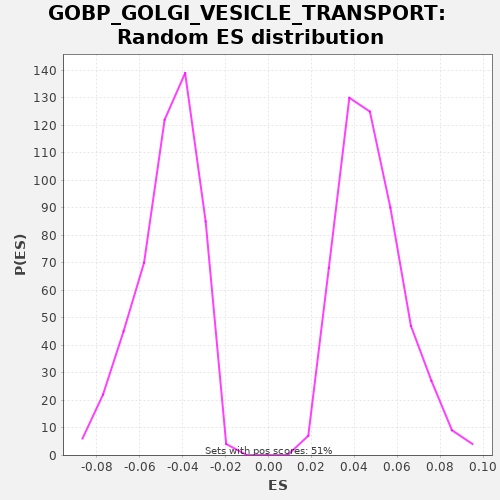

| | | Dataset | X_enriched_genes copy |
| Phenotype | NoPhenotypeAvailable |
| Upregulated in class | na_neg |
| GeneSet | GOBP_GOLGI_VESICLE_TRANSPORT |
| Enrichment Score (ES) | -0.28933844 |
| Normalized Enrichment Score (NES) | -6.1288023 |
| Nominal p-value | 0.0 |
| FDR q-value | 0.0 |
| FWER p-Value | 0.0 |
Table: GSEA Results Summary
 Fig 1: Enrichment plot: GOBP_GOLGI_VESICLE_TRANSPORT
Fig 1: Enrichment plot: GOBP_GOLGI_VESICLE_TRANSPORT
Profile of the Running ES Score & Positions of GeneSet Members on the Rank Ordered List
| SYMBOL | RANK IN GENE LIST | RANK METRIC SCORE | RUNNING ES | CORE ENRICHMENT | | 1 | RACK1 | 46 | 0.419 | 0.0005 | No |
| 2 | COPE | 56 | 0.399 | 0.0030 | No |
| 3 | DYNLL1 | 83 | 0.366 | 0.0045 | No |
| 4 | YIF1B | 206 | 0.246 | 0.0011 | No |
| 5 | TRAPPC6A | 335 | 0.180 | -0.0027 | No |
| 6 | YIF1A | 345 | 0.177 | -0.0002 | No |
| 7 | ACTR10 | 352 | 0.174 | 0.0024 | No |
| 8 | ERGIC3 | 355 | 0.173 | 0.0052 | No |
| 9 | BCAP31 | 361 | 0.170 | 0.0078 | No |
| 10 | ARL3 | 399 | 0.159 | 0.0088 | No |
| 11 | DCTN2 | 425 | 0.154 | 0.0104 | No |
| 12 | CNIH4 | 456 | 0.146 | 0.0118 | No |
| 13 | DCTN3 | 494 | 0.140 | 0.0128 | No |
| 14 | USE1 | 572 | 0.125 | 0.0117 | No |
| 15 | RAB34 | 574 | 0.125 | 0.0146 | No |
| 16 | NAPA | 700 | 0.103 | 0.0109 | No |
| 17 | COPZ2 | 736 | 0.096 | 0.0120 | No |
| 18 | COMMD1 | 865 | 0.079 | 0.0083 | No |
| 19 | KDELR1 | 933 | 0.070 | 0.0077 | No |
| 20 | RANGRF | 1000 | 0.064 | 0.0071 | No |
| 21 | ARF5 | 1010 | 0.063 | 0.0096 | No |
| 22 | CCDC22 | 1120 | 0.053 | 0.0068 | No |
| 23 | LMAN1 | 1167 | 0.049 | 0.0073 | No |
| 24 | TRAPPC5 | 1199 | 0.047 | 0.0086 | No |
| 25 | LMAN2 | 1266 | 0.042 | 0.0081 | No |
| 26 | AP1G2 | 1277 | 0.041 | 0.0105 | No |
| 27 | TRAPPC4 | 1349 | 0.038 | 0.0097 | No |
| 28 | KIF3A | 1451 | 0.033 | 0.0074 | No |
| 29 | SCAMP3 | 1452 | 0.033 | 0.0103 | No |
| 30 | TRAPPC2L | 1468 | 0.032 | 0.0124 | No |
| 31 | CD55 | 1496 | 0.031 | 0.0139 | No |
| 32 | CTSZ | 1537 | 0.029 | 0.0148 | No |
| 33 | SNX12 | 1842 | 0.021 | 0.0018 | No |
| 34 | TMED10 | 1956 | 0.019 | -0.0012 | No |
| 35 | CAPZB | 2001 | 0.018 | -0.0006 | No |
| 36 | SAR1B | 2343 | 0.013 | -0.0155 | No |
| 37 | VPS51 | 2348 | 0.013 | -0.0128 | No |
| 38 | RAB13 | 2411 | 0.012 | -0.0131 | No |
| 39 | TMED1 | 2504 | 0.011 | -0.0150 | No |
| 40 | COG8 | 2634 | 0.010 | -0.0188 | No |
| 41 | AMN | 2765 | 0.009 | -0.0227 | No |
| 42 | DCTN6 | 2782 | 0.008 | -0.0206 | No |
| 43 | KLC2 | 3668 | 0.002 | -0.0640 | No |
| 44 | TRAPPC1 | 3917 | 0.000 | -0.0741 | No |
| 45 | BNIP1 | 4051 | -0.001 | -0.0781 | No |
| 46 | MAPK15 | 4443 | -0.003 | -0.0956 | No |
| 47 | PDCD6 | 4577 | -0.003 | -0.0997 | No |
| 48 | SEC31B | 4623 | -0.004 | -0.0991 | No |
| 49 | BBS2 | 4640 | -0.004 | -0.0970 | No |
| 50 | MPPE1 | 4743 | -0.004 | -0.0994 | No |
| 51 | F9 | 5426 | -0.008 | -0.1322 | No |
| 52 | GORASP1 | 5689 | -0.009 | -0.1430 | No |
| 53 | BET1 | 5728 | -0.009 | -0.1420 | No |
| 54 | F10 | 6027 | -0.010 | -0.1547 | No |
| 55 | SNX8 | 6043 | -0.010 | -0.1526 | No |
| 56 | CNIH3 | 6345 | -0.012 | -0.1654 | No |
| 57 | KIF22 | 6347 | -0.012 | -0.1625 | No |
| 58 | TMED7 | 6416 | -0.012 | -0.1631 | No |
| 59 | SEC16B | 6563 | -0.012 | -0.1679 | No |
| 60 | VPS35L | 6656 | -0.013 | -0.1698 | No |
| 61 | TRAPPC3 | 6902 | -0.014 | -0.1797 | No |
| 62 | TMED6 | 6975 | -0.014 | -0.1805 | No |
| 63 | GRIA1 | 7014 | -0.015 | -0.1796 | No |
| 64 | KRT18 | 7028 | -0.015 | -0.1773 | No |
| 65 | LMAN2L | 7066 | -0.015 | -0.1763 | No |
| 66 | F2 | 7073 | -0.015 | -0.1737 | No |
| 67 | EHD3 | 7452 | -0.017 | -0.1906 | No |
| 68 | LMAN1L | 7602 | -0.017 | -0.1954 | No |
| 69 | PROZ | 7796 | -0.018 | -0.2026 | No |
| 70 | LYPLA1 | 8024 | -0.019 | -0.2116 | No |
| 71 | TMED3 | 8051 | -0.019 | -0.2100 | No |
| 72 | IER3IP1 | 8161 | -0.020 | -0.2128 | No |
| 73 | TICAM2 | 8168 | -0.020 | -0.2102 | No |
| 74 | ARF1 | 8233 | -0.020 | -0.2106 | No |
| 75 | SYS1 | 8234 | -0.020 | -0.2077 | No |
| 76 | F8 | 8533 | -0.022 | -0.2204 | No |
| 77 | KDELR3 | 8546 | -0.022 | -0.2181 | No |
| 78 | AP4M1 | 8583 | -0.022 | -0.2170 | No |
| 79 | F7 | 8640 | -0.022 | -0.2170 | No |
| 80 | SPTBN5 | 8727 | -0.023 | -0.2186 | No |
| 81 | CLN3 | 8832 | -0.024 | -0.2211 | No |
| 82 | SPTBN4 | 9098 | -0.026 | -0.2321 | No |
| 83 | NKD2 | 9214 | -0.026 | -0.2351 | No |
| 84 | COPG2 | 9444 | -0.028 | -0.2442 | No |
| 85 | ANK1 | 9489 | -0.028 | -0.2436 | No |
| 86 | COG1 | 9579 | -0.029 | -0.2453 | No |
| 87 | COG7 | 9702 | -0.030 | -0.2488 | No |
| 88 | ARFRP1 | 9769 | -0.030 | -0.2493 | No |
| 89 | VCP | 9890 | -0.031 | -0.2527 | No |
| 90 | CNIH2 | 10017 | -0.032 | -0.2563 | No |
| 91 | TRAPPC12 | 10039 | -0.032 | -0.2545 | No |
| 92 | STX6 | 10301 | -0.035 | -0.2652 | No |
| 93 | FOLR1 | 10383 | -0.035 | -0.2666 | No |
| 94 | BGLAP | 10423 | -0.036 | -0.2657 | No |
| 95 | PKDCC | 10428 | -0.036 | -0.2630 | No |
| 96 | PEF1 | 10447 | -0.036 | -0.2610 | No |
| 97 | SORCS1 | 10493 | -0.036 | -0.2604 | No |
| 98 | TRAPPC9 | 10515 | -0.037 | -0.2586 | No |
| 99 | COL7A1 | 10526 | -0.037 | -0.2562 | No |
| 100 | NRBP1 | 10636 | -0.038 | -0.2590 | No |
| 101 | RNF215 | 10649 | -0.038 | -0.2567 | No |
| 102 | F5 | 10702 | -0.038 | -0.2565 | No |
| 103 | VAMP3 | 10751 | -0.039 | -0.2560 | No |
| 104 | COG5 | 10809 | -0.039 | -0.2561 | No |
| 105 | SEC22A | 11019 | -0.041 | -0.2641 | No |
| 106 | RAB6B | 11080 | -0.042 | -0.2643 | No |
| 107 | RP2 | 11271 | -0.044 | -0.2714 | No |
| 108 | VAMP8 | 11443 | -0.045 | -0.2774 | No |
| 109 | VAMP5 | 11545 | -0.047 | -0.2797 | No |
| 110 | SEC13 | 11566 | -0.047 | -0.2779 | No |
| 111 | KIF3C | 11663 | -0.048 | -0.2800 | No |
| 112 | RINT1 | 11703 | -0.049 | -0.2791 | No |
| 113 | SNX3 | 11739 | -0.049 | -0.2780 | No |
| 114 | TFG | 11957 | -0.052 | -0.2864 | Yes |
| 115 | VTI1A | 12009 | -0.053 | -0.2862 | Yes |
| 116 | SPTB | 12025 | -0.053 | -0.2840 | Yes |
| 117 | DNAJC28 | 12044 | -0.053 | -0.2820 | Yes |
| 118 | RAB7B | 12082 | -0.054 | -0.2810 | Yes |
| 119 | TMED4 | 12153 | -0.055 | -0.2818 | Yes |
| 120 | GAS6 | 12154 | -0.055 | -0.2789 | Yes |
| 121 | DYNC1I1 | 12170 | -0.055 | -0.2767 | Yes |
| 122 | STX18 | 12175 | -0.055 | -0.2740 | Yes |
| 123 | GAS1 | 12183 | -0.055 | -0.2715 | Yes |
| 124 | SNX2 | 12187 | -0.055 | -0.2687 | Yes |
| 125 | CEP19 | 12235 | -0.056 | -0.2682 | Yes |
| 126 | DOP1B | 12319 | -0.057 | -0.2696 | Yes |
| 127 | WIPI1 | 12339 | -0.057 | -0.2677 | Yes |
| 128 | KIF26A | 12357 | -0.057 | -0.2657 | Yes |
| 129 | GOLGA7 | 12413 | -0.058 | -0.2656 | Yes |
| 130 | TAPBP | 12544 | -0.060 | -0.2695 | Yes |
| 131 | COPG1 | 12552 | -0.060 | -0.2670 | Yes |
| 132 | BBS1 | 12559 | -0.060 | -0.2643 | Yes |
| 133 | SNX1 | 12570 | -0.061 | -0.2619 | Yes |
| 134 | LAPTM5 | 12621 | -0.061 | -0.2616 | Yes |
| 135 | SNAP23 | 12634 | -0.062 | -0.2593 | Yes |
| 136 | VAPA | 12663 | -0.062 | -0.2579 | Yes |
| 137 | SORL1 | 12688 | -0.062 | -0.2562 | Yes |
| 138 | PREB | 12713 | -0.063 | -0.2545 | Yes |
| 139 | CORO7 | 12724 | -0.063 | -0.2521 | Yes |
| 140 | STEAP2 | 12736 | -0.063 | -0.2498 | Yes |
| 141 | KIF5A | 12814 | -0.064 | -0.2509 | Yes |
| 142 | SCYL1 | 13032 | -0.068 | -0.2593 | Yes |
| 143 | PROS1 | 13051 | -0.068 | -0.2573 | Yes |
| 144 | SEC23A | 13061 | -0.068 | -0.2549 | Yes |
| 145 | OSBPL5 | 13092 | -0.068 | -0.2535 | Yes |
| 146 | VAMP7 | 13153 | -0.069 | -0.2538 | Yes |
| 147 | TGFA | 13411 | -0.074 | -0.2643 | Yes |
| 148 | SEC22C | 13460 | -0.074 | -0.2639 | Yes |
| 149 | TMED9 | 13469 | -0.074 | -0.2614 | Yes |
| 150 | SCAMP2 | 13549 | -0.076 | -0.2626 | Yes |
| 151 | TMEM115 | 13611 | -0.077 | -0.2628 | Yes |
| 152 | RAB33B | 13622 | -0.077 | -0.2604 | Yes |
| 153 | PLPP3 | 13651 | -0.077 | -0.2590 | Yes |
| 154 | LRRK2 | 13660 | -0.077 | -0.2565 | Yes |
| 155 | GOSR2 | 13740 | -0.079 | -0.2577 | Yes |
| 156 | RAB14 | 13863 | -0.081 | -0.2611 | Yes |
| 157 | PGAP1 | 13899 | -0.082 | -0.2601 | Yes |
| 158 | ARFGAP1 | 13951 | -0.083 | -0.2598 | Yes |
| 159 | SGSM2 | 13954 | -0.083 | -0.2570 | Yes |
| 160 | AP2A1 | 13956 | -0.083 | -0.2541 | Yes |
| 161 | TRAPPC2 | 13981 | -0.083 | -0.2524 | Yes |
| 162 | SCAMP1 | 14002 | -0.084 | -0.2506 | Yes |
| 163 | STX17 | 14005 | -0.084 | -0.2477 | Yes |
| 164 | RNF139 | 14060 | -0.085 | -0.2476 | Yes |
| 165 | NAPG | 14104 | -0.085 | -0.2470 | Yes |
| 166 | BCAP29 | 14196 | -0.087 | -0.2488 | Yes |
| 167 | SAR1A | 14335 | -0.090 | -0.2531 | Yes |
| 168 | WHAMM | 14351 | -0.091 | -0.2510 | Yes |
| 169 | PRKD1 | 14445 | -0.093 | -0.2529 | Yes |
| 170 | RAB31 | 14455 | -0.093 | -0.2505 | Yes |
| 171 | SLC10A7 | 14467 | -0.093 | -0.2481 | Yes |
| 172 | MCFD2 | 14481 | -0.093 | -0.2459 | Yes |
| 173 | KIFAP3 | 14497 | -0.093 | -0.2437 | Yes |
| 174 | TRAPPC6B | 14527 | -0.094 | -0.2423 | Yes |
| 175 | CSK | 14533 | -0.094 | -0.2397 | Yes |
| 176 | BET1L | 14577 | -0.095 | -0.2390 | Yes |
| 177 | PREPL | 14584 | -0.095 | -0.2364 | Yes |
| 178 | SEC22B | 14596 | -0.095 | -0.2340 | Yes |
| 179 | CSNK1D | 14600 | -0.096 | -0.2313 | Yes |
| 180 | NRBP2 | 14674 | -0.097 | -0.2321 | Yes |
| 181 | CNST | 14743 | -0.098 | -0.2328 | Yes |
| 182 | VTI1B | 14757 | -0.099 | -0.2305 | Yes |
| 183 | GGA3 | 14817 | -0.100 | -0.2307 | Yes |
| 184 | PICK1 | 14830 | -0.100 | -0.2284 | Yes |
| 185 | ATP9A | 14954 | -0.102 | -0.2319 | Yes |
| 186 | ARF4 | 14978 | -0.103 | -0.2302 | Yes |
| 187 | LAMP1 | 14991 | -0.103 | -0.2279 | Yes |
| 188 | GGA1 | 14995 | -0.103 | -0.2251 | Yes |
| 189 | KLHL12 | 15074 | -0.105 | -0.2263 | Yes |
| 190 | VPS52 | 15104 | -0.105 | -0.2249 | Yes |
| 191 | VAMP2 | 15113 | -0.106 | -0.2224 | Yes |
| 192 | OPTN | 15202 | -0.107 | -0.2241 | Yes |
| 193 | CUX1 | 15213 | -0.107 | -0.2217 | Yes |
| 194 | COG2 | 15221 | -0.107 | -0.2191 | Yes |
| 195 | SPIRE1 | 15268 | -0.109 | -0.2186 | Yes |
| 196 | RER1 | 15432 | -0.112 | -0.2242 | Yes |
| 197 | SEC24A | 15445 | -0.113 | -0.2219 | Yes |
| 198 | SCAP | 15461 | -0.113 | -0.2198 | Yes |
| 199 | SPTBN2 | 15506 | -0.114 | -0.2191 | Yes |
| 200 | TMED5 | 15522 | -0.115 | -0.2170 | Yes |
| 201 | TBC1D14 | 15536 | -0.115 | -0.2148 | Yes |
| 202 | GOLPH3L | 15543 | -0.115 | -0.2121 | Yes |
| 203 | KLHL20 | 15557 | -0.115 | -0.2099 | Yes |
| 204 | BLZF1 | 15575 | -0.116 | -0.2079 | Yes |
| 205 | EXOC8 | 15628 | -0.117 | -0.2077 | Yes |
| 206 | SEC24D | 15650 | -0.118 | -0.2058 | Yes |
| 207 | DCTN5 | 15679 | -0.118 | -0.2044 | Yes |
| 208 | SORT1 | 15686 | -0.119 | -0.2018 | Yes |
| 209 | GGA2 | 15695 | -0.119 | -0.1993 | Yes |
| 210 | CTSC | 15714 | -0.119 | -0.1973 | Yes |
| 211 | CNIH1 | 15715 | -0.119 | -0.1944 | Yes |
| 212 | COG3 | 15722 | -0.119 | -0.1917 | Yes |
| 213 | NBAS | 15817 | -0.121 | -0.1937 | Yes |
| 214 | GABARAPL2 | 15911 | -0.123 | -0.1957 | Yes |
| 215 | RABIF | 15954 | -0.125 | -0.1950 | Yes |
| 216 | PPP6C | 15999 | -0.126 | -0.1943 | Yes |
| 217 | KIF1C | 16026 | -0.127 | -0.1928 | Yes |
| 218 | ERGIC1 | 16102 | -0.129 | -0.1938 | Yes |
| 219 | KIF2C | 16253 | -0.133 | -0.1987 | Yes |
| 220 | COG6 | 16288 | -0.134 | -0.1975 | Yes |
| 221 | CYTH3 | 16375 | -0.136 | -0.1991 | Yes |
| 222 | ATP9B | 16377 | -0.137 | -0.1963 | Yes |
| 223 | DYNLL2 | 16414 | -0.138 | -0.1952 | Yes |
| 224 | SPIRE2 | 16444 | -0.138 | -0.1938 | Yes |
| 225 | KIF2A | 16473 | -0.139 | -0.1923 | Yes |
| 226 | KLC1 | 16474 | -0.139 | -0.1894 | Yes |
| 227 | EXOC6 | 16477 | -0.139 | -0.1866 | Yes |
| 228 | ANK2 | 16518 | -0.140 | -0.1858 | Yes |
| 229 | DOP1A | 16536 | -0.141 | -0.1837 | Yes |
| 230 | SEC16A | 16659 | -0.145 | -0.1872 | Yes |
| 231 | BICD2 | 16669 | -0.145 | -0.1847 | Yes |
| 232 | COG4 | 16675 | -0.145 | -0.1821 | Yes |
| 233 | YIPF5 | 16694 | -0.146 | -0.1801 | Yes |
| 234 | DYNC1I2 | 16718 | -0.147 | -0.1784 | Yes |
| 235 | RAB8A | 16773 | -0.149 | -0.1783 | Yes |
| 236 | VPS13C | 16847 | -0.151 | -0.1792 | Yes |
| 237 | SCFD1 | 16878 | -0.152 | -0.1778 | Yes |
| 238 | ANKFY1 | 16941 | -0.154 | -0.1781 | Yes |
| 239 | YKT6 | 16946 | -0.154 | -0.1754 | Yes |
| 240 | ERGIC2 | 16951 | -0.154 | -0.1727 | Yes |
| 241 | DCTN4 | 16993 | -0.155 | -0.1719 | Yes |
| 242 | HTT | 17037 | -0.157 | -0.1713 | Yes |
| 243 | STXBP6 | 17056 | -0.158 | -0.1693 | Yes |
| 244 | SURF4 | 17074 | -0.158 | -0.1672 | Yes |
| 245 | CCDC91 | 17077 | -0.159 | -0.1644 | Yes |
| 246 | CAPZA2 | 17085 | -0.159 | -0.1619 | Yes |
| 247 | KIF3B | 17102 | -0.160 | -0.1598 | Yes |
| 248 | LLGL1 | 17104 | -0.160 | -0.1569 | Yes |
| 249 | VPS54 | 17111 | -0.160 | -0.1543 | Yes |
| 250 | RACGAP1 | 17114 | -0.160 | -0.1515 | Yes |
| 251 | TBC1D20 | 17116 | -0.160 | -0.1486 | Yes |
| 252 | CREB3L2 | 17155 | -0.161 | -0.1477 | Yes |
| 253 | TMED2 | 17221 | -0.164 | -0.1482 | Yes |
| 254 | CCDC93 | 17299 | -0.166 | -0.1493 | Yes |
| 255 | RBSN | 17301 | -0.167 | -0.1464 | Yes |
| 256 | KDELR2 | 17344 | -0.168 | -0.1457 | Yes |
| 257 | EXOC4 | 17373 | -0.169 | -0.1442 | Yes |
| 258 | PPP6R1 | 17419 | -0.171 | -0.1436 | Yes |
| 259 | EXOC1 | 17441 | -0.171 | -0.1418 | Yes |
| 260 | EXOC2 | 17474 | -0.173 | -0.1406 | Yes |
| 261 | ACTR1A | 17514 | -0.174 | -0.1397 | Yes |
| 262 | KIF13A | 17542 | -0.175 | -0.1382 | Yes |
| 263 | EXOC6B | 17553 | -0.176 | -0.1358 | Yes |
| 264 | MON2 | 17560 | -0.176 | -0.1332 | Yes |
| 265 | DYNC1LI1 | 17571 | -0.177 | -0.1308 | Yes |
| 266 | RAB8B | 17593 | -0.178 | -0.1289 | Yes |
| 267 | VAPB | 17595 | -0.178 | -0.1261 | Yes |
| 268 | TEX261 | 17608 | -0.179 | -0.1238 | Yes |
| 269 | ANK3 | 17654 | -0.181 | -0.1232 | Yes |
| 270 | ARFGAP3 | 17661 | -0.181 | -0.1206 | Yes |
| 271 | SPAST | 17680 | -0.182 | -0.1186 | Yes |
| 272 | GOSR1 | 17681 | -0.182 | -0.1157 | Yes |
| 273 | SEC24B | 17692 | -0.183 | -0.1133 | Yes |
| 274 | ZW10 | 17702 | -0.183 | -0.1108 | Yes |
| 275 | DNM2 | 17740 | -0.185 | -0.1098 | Yes |
| 276 | COPZ1 | 17780 | -0.187 | -0.1089 | Yes |
| 277 | RAB1B | 17785 | -0.188 | -0.1062 | Yes |
| 278 | CENPE | 17885 | -0.192 | -0.1085 | Yes |
| 279 | SEC23IP | 17900 | -0.193 | -0.1063 | Yes |
| 280 | VPS13A | 17943 | -0.195 | -0.1056 | Yes |
| 281 | TRAPPC11 | 17978 | -0.196 | -0.1044 | Yes |
| 282 | CAPZA1 | 17985 | -0.197 | -0.1018 | Yes |
| 283 | GBF1 | 17995 | -0.197 | -0.0994 | Yes |
| 284 | SEC23B | 18015 | -0.198 | -0.0974 | Yes |
| 285 | TRAPPC10 | 18047 | -0.200 | -0.0961 | Yes |
| 286 | USO1 | 18060 | -0.201 | -0.0938 | Yes |
| 287 | RAB6A | 18068 | -0.201 | -0.0913 | Yes |
| 288 | SEC24C | 18077 | -0.202 | -0.0888 | Yes |
| 289 | INSIG1 | 18146 | -0.205 | -0.0894 | Yes |
| 290 | KIF16B | 18149 | -0.205 | -0.0866 | Yes |
| 291 | HYOU1 | 18153 | -0.205 | -0.0838 | Yes |
| 292 | ARFGAP2 | 18165 | -0.206 | -0.0815 | Yes |
| 293 | AP3D1 | 18209 | -0.209 | -0.0808 | Yes |
| 294 | GOLGA5 | 18226 | -0.210 | -0.0787 | Yes |
| 295 | GOPC | 18241 | -0.211 | -0.0765 | Yes |
| 296 | EPS15 | 18282 | -0.213 | -0.0757 | Yes |
| 297 | GAK | 18284 | -0.213 | -0.0728 | Yes |
| 298 | AP1AR | 18288 | -0.214 | -0.0700 | Yes |
| 299 | RAB1A | 18366 | -0.218 | -0.0712 | Yes |
| 300 | COPB2 | 18374 | -0.219 | -0.0686 | Yes |
| 301 | RABEP1 | 18393 | -0.220 | -0.0666 | Yes |
| 302 | GOLGA3 | 18456 | -0.224 | -0.0669 | Yes |
| 303 | GOLGA2 | 18473 | -0.225 | -0.0648 | Yes |
| 304 | TRAPPC8 | 18480 | -0.226 | -0.0622 | Yes |
| 305 | GCC2 | 18499 | -0.228 | -0.0603 | Yes |
| 306 | PRKCI | 18551 | -0.231 | -0.0600 | Yes |
| 307 | COPB1 | 18555 | -0.231 | -0.0572 | Yes |
| 308 | ARFGEF2 | 18559 | -0.232 | -0.0545 | Yes |
| 309 | DCTN1 | 18623 | -0.237 | -0.0548 | Yes |
| 310 | KIF15 | 18631 | -0.238 | -0.0523 | Yes |
| 311 | ACSL3 | 18700 | -0.245 | -0.0529 | Yes |
| 312 | MIA3 | 18709 | -0.246 | -0.0504 | Yes |
| 313 | DYNC1LI2 | 18732 | -0.248 | -0.0486 | Yes |
| 314 | PPP6R3 | 18764 | -0.252 | -0.0473 | Yes |
| 315 | ANKRD28 | 18786 | -0.255 | -0.0455 | Yes |
| 316 | DYNC1H1 | 18810 | -0.259 | -0.0438 | Yes |
| 317 | MYO5A | 18854 | -0.263 | -0.0431 | Yes |
| 318 | COPA | 18907 | -0.268 | -0.0429 | Yes |
| 319 | NSF | 18926 | -0.270 | -0.0409 | Yes |
| 320 | MYO1B | 18954 | -0.273 | -0.0394 | Yes |
| 321 | ARF3 | 18983 | -0.277 | -0.0380 | Yes |
| 322 | GOLPH3 | 18985 | -0.278 | -0.0351 | Yes |
| 323 | EXOC5 | 18994 | -0.279 | -0.0326 | Yes |
| 324 | MYO18A | 18998 | -0.279 | -0.0298 | Yes |
| 325 | KIF18A | 19010 | -0.281 | -0.0275 | Yes |
| 326 | RAB10 | 19059 | -0.289 | -0.0271 | Yes |
| 327 | GOLGB1 | 19080 | -0.293 | -0.0252 | Yes |
| 328 | UVRAG | 19089 | -0.295 | -0.0227 | Yes |
| 329 | MIA2 | 19107 | -0.298 | -0.0206 | Yes |
| 330 | AP1G1 | 19119 | -0.300 | -0.0183 | Yes |
| 331 | SEC31A | 19181 | -0.314 | -0.0186 | Yes |
| 332 | AREG | 19194 | -0.317 | -0.0163 | Yes |
| 333 | GOLGA4 | 19204 | -0.322 | -0.0138 | Yes |
| 334 | PITPNB | 19229 | -0.328 | -0.0121 | Yes |
| 335 | MACF1 | 19300 | -0.353 | -0.0129 | Yes |
| 336 | CUL3 | 19329 | -0.369 | -0.0114 | Yes |
| 337 | KIF23 | 19335 | -0.372 | -0.0088 | Yes |
| 338 | TRIP11 | 19339 | -0.376 | -0.0060 | Yes |
| 339 | ARCN1 | 19382 | -0.415 | -0.0053 | Yes |
| 340 | SPTAN1 | 19391 | -0.430 | -0.0028 | Yes |
| 341 | SPTBN1 | 19440 | -0.517 | -0.0023 | Yes |
| 342 | KIF11 | 19451 | -0.625 | 0.0001 | Yes |
Table: GSEA details [plain text format]

Fig 2: GOBP_GOLGI_VESICLE_TRANSPORT: Random ES distribution
Gene set null distribution of ES for GOBP_GOLGI_VESICLE_TRANSPORT